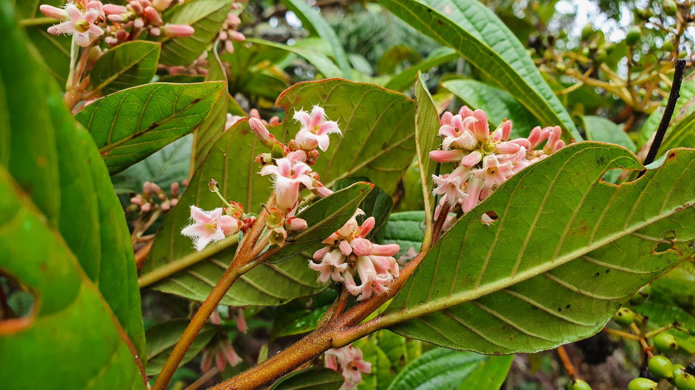

Conocimiento que nace de la naturaleza
Somos un grupo de investigación dedicado al estudio de la farmacognosia y al valor de las plantas medicinales en el campo farmacéutico.
Conoce más
Exploramos el potencial de los recursos naturales y el conocimiento tradicional mediante la investigación científica.
Conoce nuestras líneas de investigación →Somos un grupo de investigación dedicado al estudio de la farmacognosia y al valor de las plantas medicinales en el campo farmacéutico.
Conoce másExploramos la biodiversidad peruana y sus aplicaciones potenciales en el ámbito de la salud.
Explora líneasPróximamente
Si eres estudiante y te apasiona la ciencia, ¡únete a nuestro grupo!